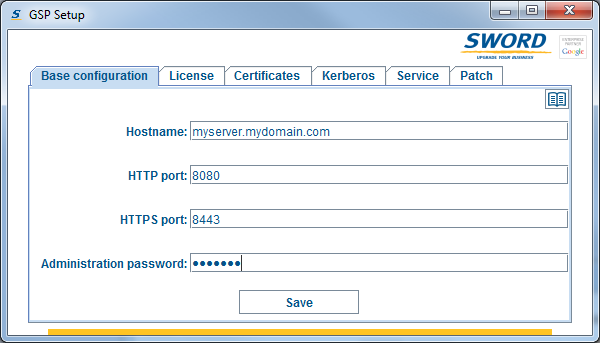
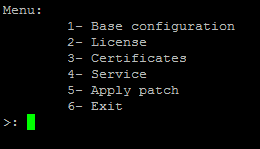
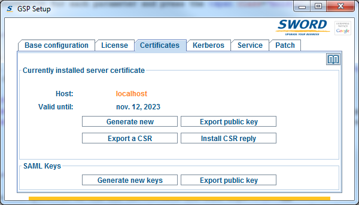
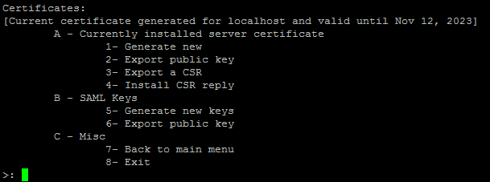
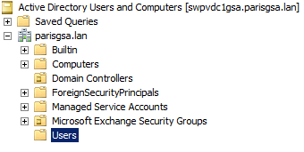
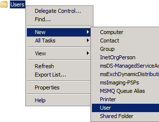
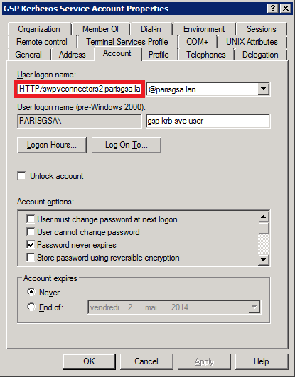

Contents
Use the SCS Setup application to configure the SCS server.
When you start the application, if your environment is headless, it will automatically start in console mode. It will start a GUI otherwise.
To start the application, navigate to the SCS installation folder and run:
- setup.exe on Windows ;
- ./setup.sh on Linux.
The script setup.sh detects whether a graphical interface is available and starts in GUI mode or console mode.
On some Linux installations, JAVA fails to detect that the environment is headless and tries to start a GUI.
In that case, an error occurs (Could not initialize class sun.awt.X11GraphicsEnvironment) and the setup application exits immediately.
To force the setup application to start in console mode, run the script with the argument /NoGUI:
./setup.sh /NoGUI
|
In GUI mode, the Setup application menus are organized in tabs. Click on a tab to access the menu.

In console mode, menus can be accessed by typing their item number.

The first time you execute the SCS Setup application, you will automatically be redirected to the HTTP Configuration menu.
In this page you can configure the SCS basic HTTP parameters.
To access this page, open the setup application and go to the Base configuration menu.
This page allows the configuration of the 4 parameters below:
| Parameter name | Description |
|---|---|
| Hostname: | The server host name. This name must be fully qualified: For instance if the server name is myhost and the domain suffix is mydomain.com, the fully qualified domain name of the server is myhost.domain.com. |
| HTTP port: | The number of the HTTP port that the server will use to listen for incoming HTTP connections. On Linux systems, ports lower than 1024 cannot be bound without root privileges and running a web server as root is strongly discouraged. If you want the SCS to use port 80 for HTTP, it is recommended to configure the SCS for a higher port and change the routing table configuration to re-route port 80 to the SCS HTTP port. |
| HTTPS port: | The number of the HTTP port that the server will use to listen for incoming HTTPS connections. On Linux systems, ports lower than 1024 cannot be bound without root privileges and running a web server as root is strongly discouraged. If you want the SCS to use port 443 for HTTPS, it is recommended to configure the SCS for a higher port and change the routing table configuration to re-route port 443 to the SCS HTTPS port. |
| Administration password: | This password will be necessary to access the SCS administration web interface. SCS administration web interface access is protected by HTTP Basic authentication over SSL. Username is always SCSAdmin and password is the password that you configure here. |
Enter the correct information for each parameter and press the Save button.
This page allows the installation of the SCS license.
To access this page, open the setup application and go to the License menu.
The page allows the following:
| Export Instance ID: | A unique ID is associated with each SCS instance. Before you can install a license, you need to export the instance ID to a file and send this file to Sword, requesting a license for this instance. |
| Import License: | Once you receive the license file from Sword, you can install it by indicating the path of the license file. |
This page allows the configuration of the SCS certificate and SAML keys.
To access this page, open the setup application and go to the Certificates menu.
The page contains two sections:
- Currently installed server certificate
- SAML Keys
| GUI |  |
| Console |  |
This section shows information about the certificate that the SCS is currently using:
| Host: | The hostname for which this certificate is valid. Initially the connector contains a self-signed certificate generated for the host localhost |
| Valid until: | The certificate expiration date. |
From this menu, you can also:
| Item name | Description |
|---|---|
| Generate new: | Will generate a new self-signed certificate for the hostname configured in the SCS HTTP Configuration. This certificate will then be used by the server for all HTTPS connections. |
| Export public key: | Exports the current certificate in a base64 encoded PEM format. When the certificate is not signed by a trusted certification authority, exporting it allows you to add it to the list of trusted certificates of your web browser, the GSA or any application that will connect to the SCS in HTTPS. |
| Export a CSR: | Will generate a certificate signing request (CSR) that your certification authority needs to sign the certificate. |
| Install CSR reply: |
Installs the signed certificate supplied by your CA.
The CSR reply needs to contain the entire certificate chain in base64 encoded PEM format - for this you need to combine the host certificate, intermediate CA certificates (if any), and the root CA certificate in a single file.
The certificates must be in the following order:
-----BEGIN CERTIFICATE-----
Host certificate
-----END CERTIFICATE-----
-----BEGIN CERTIFICATE-----
Intermediate certificate-1
-----END CERTIFICATE-----
-----BEGIN CERTIFICATE-----
Intermediate certificate-2
-----END CERTIFICATE-----
-----BEGIN CERTIFICATE-----
Root certificate
-----END CERTIFICATE-----
|
SAML keys consist of a RSA key pair (private/public key):
- The private key is used to sign the SAML messages sent by the SCS to the GSA during SAML Post-Binding authentication.
- The public key is used by the GSA to verify the signature of the SAML messages received from the SCS.
You do not need to worry about these keys if you are not planning on using SAML Post-Binding authentication.
In this section you can create and export the SAML keys. It contains two options:
| Option name | Description |
|---|---|
| Generate new keys: | Will generate a new set of keys. |
| Export public key: |
Exports the current public key in a format suitable for the GSA.
To import it into the GSA, open the exported key with a text editor and copy its content in GSA administration console:
Universal Login Auth Mechanisms -> SAML tab -> textarea named "Public Key of IDP"
|
Prior to configuring the SCS for Kerberos authentication, the following tasks have to be completed on the domain controller:
- Log into one of the Windows servers that act as the domain controller on your network.
-
Open Active Directory Users and Computers management wizard:
- dsa.msc, or
- Start Menu -> All Programs -> Administrative Tools -> Active Directory Users and Computers.
-
In the left-hand side navigation panel, select <domain name> -> Users:
 -
Right-click the Users folder and select New -> User:
 -
In the user creation dialog window:
- Choose a Full name ;
- a User logon name ;
- select a domain that is trusted by all the other domains ;
- then click on Next.
-
In the subsequent dialog window:
- Choose a password ;
- if permitted by your security policies, check the Password never expires checkbox ;
- uncheck all other checkboxes ;
- then click on Next.
- In the subsequent dialog window click on Finish.
The configuration of the SPN and the generation of the service shared secret key is achieved using one single command: the ktpass command.
To run this command, you need to be connected as a Domain Administrator to the connector machine or to the Domain Controller.
According to the Microsoft documentation the following parameters are supported:
The values for above parameters are calculated based on the following parameters:
From there, the values for the ktpass command parameters are:
Hence the resulting command for above sample values would be:
To run this command, you need to be connected as a Domain Administrator to the connector machine or to the Domain Controller.
According to the Microsoft documentation the following parameters are supported:
| Parameter | Value specification | Description |
|---|---|---|
| /out | <FileName> | Specifies the name of the Kerberos version 5 .keytab file to generate. |
| /princ | <PrincipalName> | Specifies the principal name. |
| /mapuser | <UserAccount> | Maps the name of the Kerberos principal, which is specified by the princ parameter, to the specified domain account. |
| /pass | {Password|*|{-|+}rndpass} | Specifies a password for the principal user name that is specified by the princ parameter. Use "*" to prompt for a password. |
| /crypto | {DES-CBC-CRC|DES-CBC-MD5|RC4-HMAC-NT| AES256-SHA1|AES128-SHA1|All} | Specifies the keys that are generated in the keytab file. |
| /ptype | {KRB5_NT_PRINCIPAL|KRB5_NT_SRV_INST|KRB5_NT_SRV_HST} | Specifies the principal type. |
| Parameter name | Description | Value used in examples |
|---|---|---|
| Domain name | Fully qualified domain name (see wiki). | mydomain.com |
| Kerberos realm | Although Kerberos realm can be any ASCII string, convention is to make it the same as the domain name, in upper-case letters (see wiki). | MYDOMAIN.COM |
| Domain NetBIOS name | The NetBIOS name of the domain. | MYDOMAIN |
| SCS fqdn | Fully qualified domain name of the SCS machine. | scs.mydomain.com |
| SCS service user | The logon name of the user that was created during the previous step. | scs-krb-svc-user |
| SCS service user's password | Above user's password. | $omep4ssw0rd |
| Parameter | Value Format | Example Value |
|---|---|---|
| /out | Any valid file path | C:\scs.keytab |
| /princ | Concatenation of HTTP/, the SCS fqdn, the @ character and the Kerberos realm | HTTP/scs.mydomain.com@MYDOMAIN.COM |
| /mapuser | Concatenation of the Domain NetBIOS name, the \ character and the SCS service user | MYDOMAIN\scs-krb-svc-user |
| /pass | The SCS service user's password or * for a secure prompt. | $omep4ssw0rd |
| /crypto | Has to be RC4-HMAC-NT | RC4-HMAC-NT |
| /ptype | Has to be KRB5_NT_PRINCIPAL | KRB5_NT_PRINCIPAL |
ktpass /out C:\scs.keytab /princ HTTP/scs.mydomain.com@MYDOMAIN.COM /mapuser MYDOMAIN\scs-krb-svc-user /pass $omep4ssw0rd /crypto RC4-HMAC-NT /ptype KRB5_NT_PRINCIPAL
After you run this command, you can verify that it was successful by checking that:- The file specified by the /out parameter has been created.
- The principal value specified by the /princ parameter appears in the Account tab of the user properties in the Active Directory Users and Computers management wizard:

This page allows the configuration of Kerberos authentication for the SCS. It is only available with the GUI mode.
To access this page, open the setup application and go to the Kerberos tab.
The page contains four parameters:
| Parameter name | Description |
|---|---|
| Kerberos REALM: | Use the value that you chose for the Kerberos realm parameter during the configuration of the SPN. |
| SPN Hostname: | Use the value that you chose for the SCS fqdn parameter during the configuration of the SPN. |
| KDC Hostname: | Hostname of the KDC (Key Distribution Center). On Windows systems the domain controller (Active Directory) is the KDC. |
| Keytab file: | Upload the file that was generated during the generation of the service shared secret key (/out parameter of the ktpass command). |
Enter the correct information for each parameter and press the Save button.
This page allows the configuration of the SCS as a service.
Configuring the SCS as a service is only possible on:
- Windows platforms
- Linux platforms with the chkconfig utility installed (Redhat, Centos)
- Linux platforms with the update-rc.d utility installed (all Debian-based Linux systems)
To access this page, open the setup application and go to the Service menu.
The page allows the following:
| Item name | Description |
|---|---|
| Open configuration page (GUI mode only): | This item is enabled only when the service is installed and started and will open the SCS Web Manager with your OS default web browser. |
| View configuration page URL (Console mode only): | This item is enabled only when the service is installed and started and will display the SCS Web Manager URL so that you can open it from a machine that has a GUI and a HTML5-compatible web browser. |
| Delete: | This item is enabled only when the service is installed and stopped and will delete the service from the OS configuration. |
| Start: | This item is enabled only when the service is installed and stopped and will start the service. |
| Restart: | This item is enabled only when the service is installed and started and will stop the service, backup the SCS log then start the service. |
| Stop: | This item is enabled only when the service is installed and started and will stop the service. |
As the SCS evolves, Sword can supply patches that will upgrade the SCS and its connectors to the latest version. This page allows you to apply supplied patch.
To access this page, open the setup application and go to the Apply Patch menu.